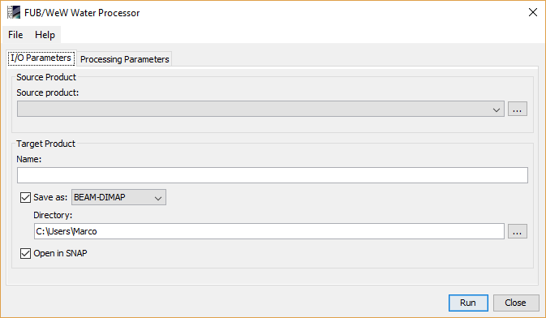
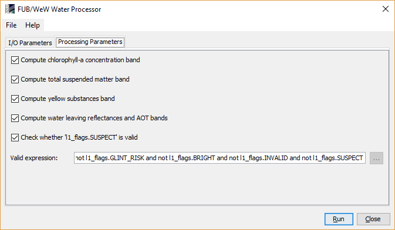

| FUB/Wew Water Processor - Processor Description |
|
The FUB/WeW Water Processor can be invoked from the VISAT tool menu by selecting
the MERIS FUB/WeW WATER Processor command. On the command line the FUB/WeW Water Processor is
available by means of the Graph Processing Tool gpt which is located in the BEAM bin
directory. Typing gpt FUB.Water -h displays further information.
Selecting the MERIS FUB/WeW WATER Processor command from the VISAT tool menu pops up the following dialog:

Source product: Here the user specifies the source product. The combo box presents a list of all products open in VISAT. The user may select one of these or, by clicking on the button next to the combo box, choose a product from the file system.
Name: Used to specify the name of the target product.
Save as: Used to specify whether the target product should be saved to the file system. The combo box presents a list of available file formats. The text field or the button next to it allow to specify a target directory.
Open in VISAT: Used to specify whether the target product should be opened in VISAT. When the the target product is not saved, it is opened in VISAT automatically.
Run Creates the target product. The FUB/WeW water processing is actually deferred until its band data are accessed, either by writing the product to a file or by viewing its band data. When the Save as option is checked, the processing is triggered automatically.
Close Closes the dialog.
File The entries found in this menu allow to save the current processing parameters to disk and to open a saved parameter set from disk.
Help Access to this help pages and to an About dialog.

Compute chlorophyll-a concentration band:
Whether chlorophyll-a concentration band shall be computed.
Compute yellow substances band:
Whether yellow substances band shall be computed.
Compute total suspended matter band:
Whether total suspended matter band shall be computed.
Compute water leaving reflectances and AOT bands:
Whether atmospheric correction bands shall be computed
Check whether l1_flags.SUSPECT is valid:
This is an expert parameter. Performs a check whether the l1_flags.SUSPECT shall be considered in an expression.
This parameter is only considered when the expression contains the term 'and not l1_flags.SUSPECT'".
This test is useful because some MERIS Level 1b scenes mark almost all pixels as suspect. If more than 50%
of the pixel of an line in the scene center are marked as suspect than the suspect flag is removed from
the expression.
Use valid pixel expression:
Band maths expression which defines valid pixels. If the expression is empty, all pixels will be
considered as valid. The default value for the expression is
"not l1_flags.GLINT_RISK and not l1_flags.BRIGHT and not l1_flags.INVALID and not l1_flags.SUSPECT"